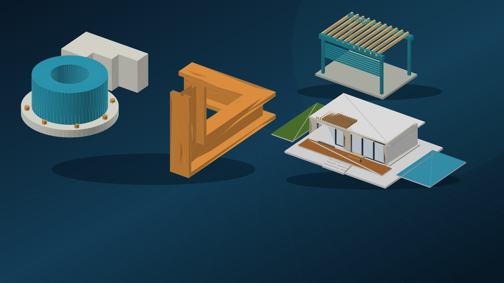
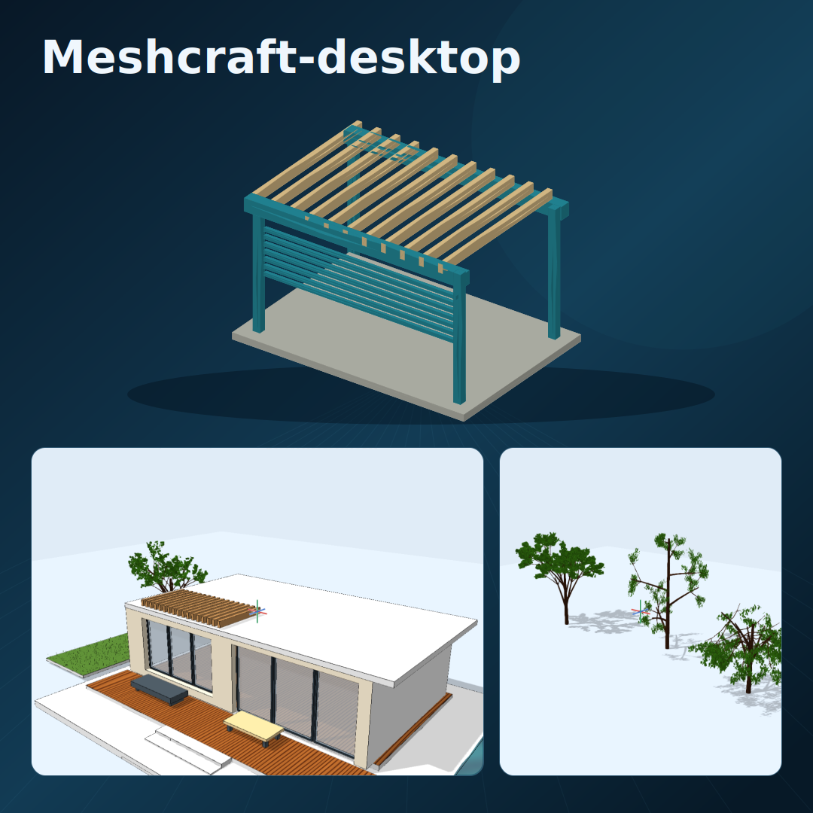
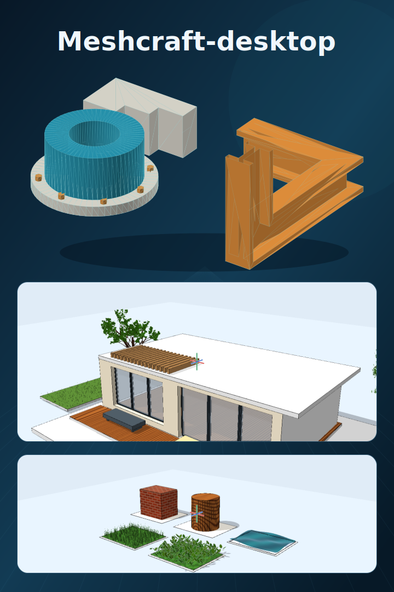
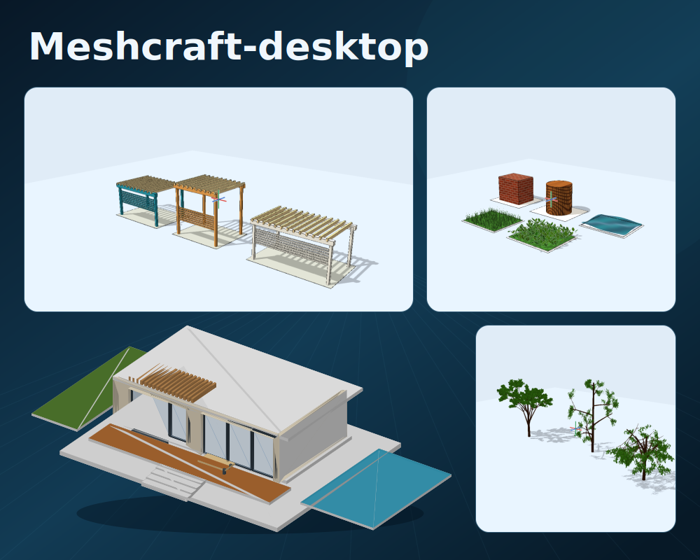
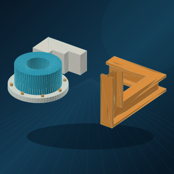
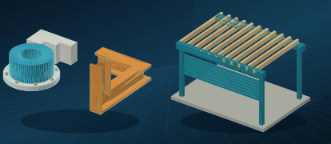

Meshcraft-desktop
Prepared listing, not a live Store page.
The app interface is English. Translations have not had native-speaker review.
Features
Search terms
Hardware
Store artwork
Promotional artwork, separate from screenshots.






Import instructions and submission fields